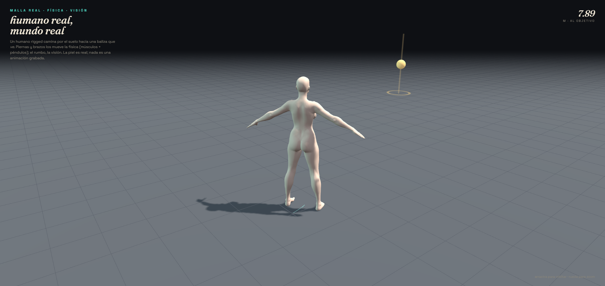
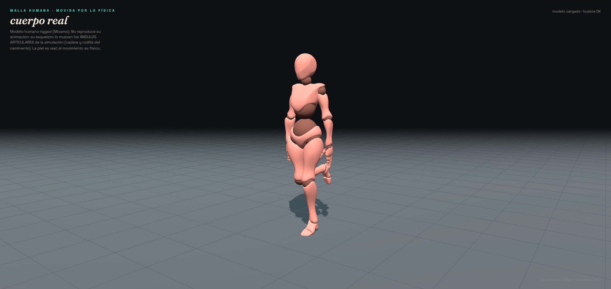
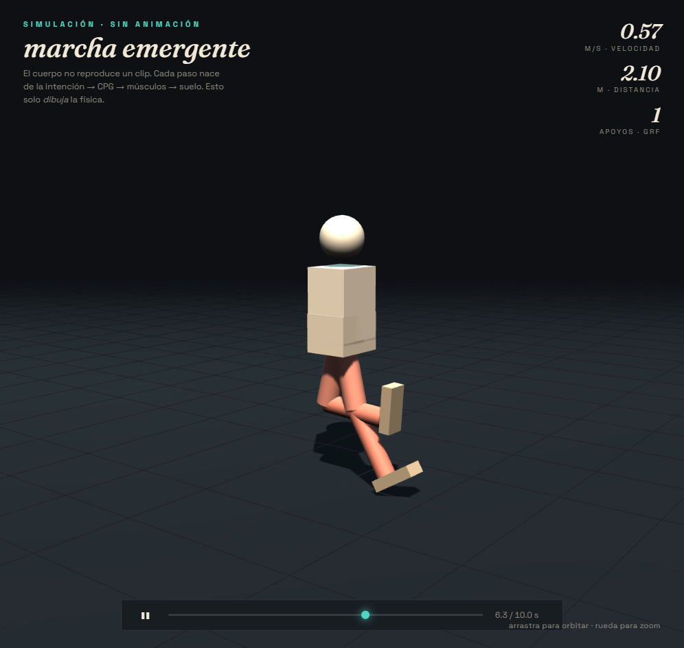
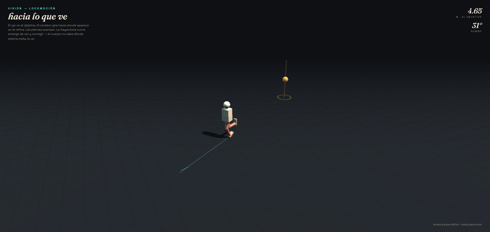
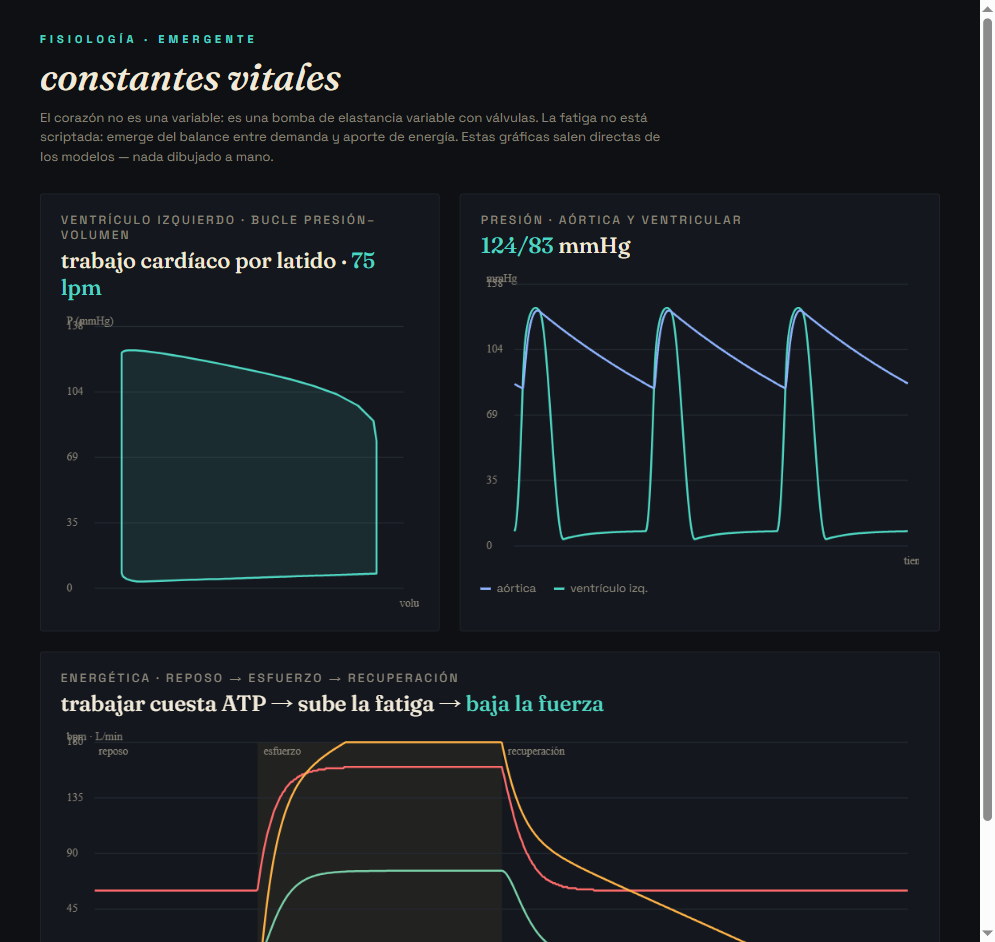

Un cuerpo cuyo movimiento no está grabado: emerge de nodos, actuadores, huesos, suelo y sentidos. Estos visores dibujan la simulación real. Nada es una animación.

Un humano rigged camina por el suelo hacia una baliza que ve. Piernas y brazos por física; el rumbo, la visión.

El armadura de un modelo Mixamo, movido por los ángulos articulares de la simulación.

Intención → CPG → actuadores → suelo → avanza. Los pies brillan con la fuerza del suelo.

Servovisión: gira hacia la posición retiniana del objetivo y camina en curva hasta él.

Bucle presión-volumen del bomba, presiones 124/80, y la desgaste que emerge del esfuerzo.